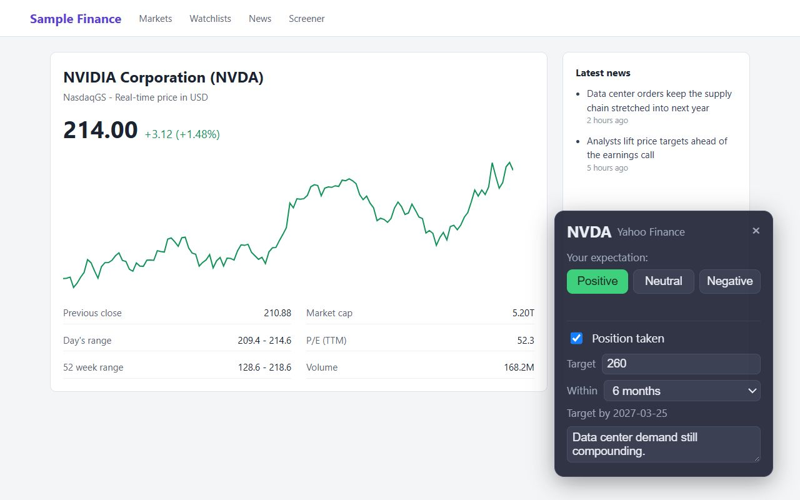

1. Capture
Label a stock in one click, right where you research
Open a stock page on a supported finance site and a small card appears in the corner of the page. Nothing to start, nothing to copy: the view is logged for you.
- Ticker, time, price and source are recorded automatically on Yahoo Finance, Google Finance, MarketWatch, CNBC, Bloomberg, StockAnalysis, MarketBeat, Finviz, TradingView, Seeking Alpha, Nasdaq, Stocktwits, WSJ and Perplexity. Add any other site as a custom portal in Settings.
- Say what you expect with one click: Positive, Neutral or Negative.
- Optionally mark that you took a position, set a target price, choose a time horizon (1 week to 1 year) and write the one-line reason while it is fresh.
- Reading behaviour is captured quietly in the background, with no extra clicks.

Statistics measured
Recorded on every view
- Price at view
- The price when you opened the page, the anchor for every return the dashboard computes.
- Active time
- Minutes the tab was visible and in use on the stock page.
- Scroll depth
- How far down the page you read (maximum reached).
- Focus switches
- How often you tabbed away and came back during the visit.
- Market session
- Pre-market, market hours, after hours or overnight (US/Eastern) at the moment of the view.
- Your call
- Outlook label, position taken, target price, horizon and rationale.